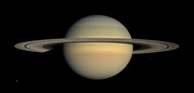

|  |
|---|
| Saturno es un planeta gigante gaseoso y el sexto desde el Sol, conocido por sus espectaculares anillos de hielo y rocas. Compuesto principalmente de hidrógeno y helio, este planeta es tan grande que tiene más de 80 lunas, incluida la atmósfera de Titán. Su apariencia, su composición y su sistema de anillos únicos lo convierten en un objeto celestial de gran interés |